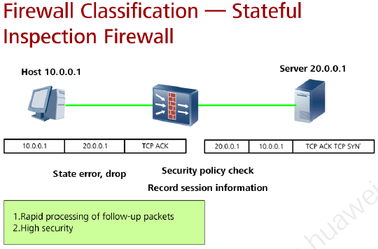

¿Que es? |
|
| Los Firewall de inspección de estado son una extensión de la tecnología de filtrado de paquetes. El filtrado de paquetes basado en el estado de la conexión considera cada paquete de datos como una unidad independiente y tiene en cuenta las relaciones históricas entre los paquetes anteriores y de seguimiento. |
 |
| El establecimiento de todas las conexiones confiables (conexiones TCP) debe pasar por el proceso de "reconocimiento de tres vías", a saber, "solicitud de sincronización del cliente", "respuesta del servidor" y "respuesta del cliente", que significa cada paquete de datos. No es independiente, sino que está estrechamente conectado entre sí. | |
|
Los firewalls de inspección de estado utilizan todo tipo de tablas de sesión para abordar las sesiones TCP activadas y las sesiones falsas UDP, la lista de control de acceso (ACL) decide qué sesiones deben establecerse y los paquetes de datos se reenvían solo cuando coinciden con una entrada de sesión. Las sesiones falsas UDP son conexiones virtuales (UDP son protocolos sin conexión) para la inspección de estado,y se establecen para el flujo de datos UP cuando se procesan los paquetes UDP. |
|
Ventajas |
|